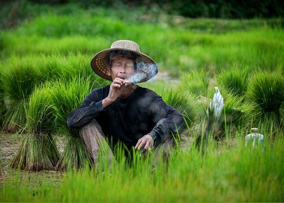
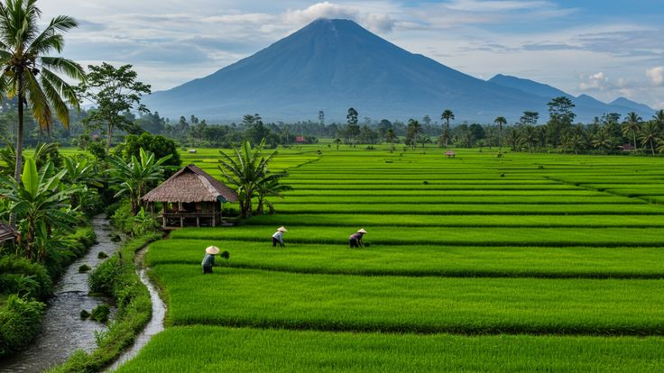

table_chart Daftar Monitoring Lahan
Total: 124 Lahan| ID Lahan | Petani | Komoditas | Status | Aksi |
|---|---|---|---|---|
| #L-092 |  Ahmad Subarjo Ahmad Subarjo | Padi Inpari 32 | Optimal | |
| #L-104 |  Budi Setiawan | Jagung Manis | Irigasi Rendah | |
| #L-115 |  Rahmat Dani Rahmat Dani | Cabai Merah | Hama Darurat | |
| #L-201 |  Siti Khadijah Siti Khadijah | Bawang Merah | Optimal |

eco priority_high water_dropLahan #L-092
Kecamatan Majalengka, Jawa Barat
Pemilik Lahan
Ahmad SubarjoKomoditas
Padi Inpari 32Kelembaban
82%
Suhu
24°C
pH
6.8